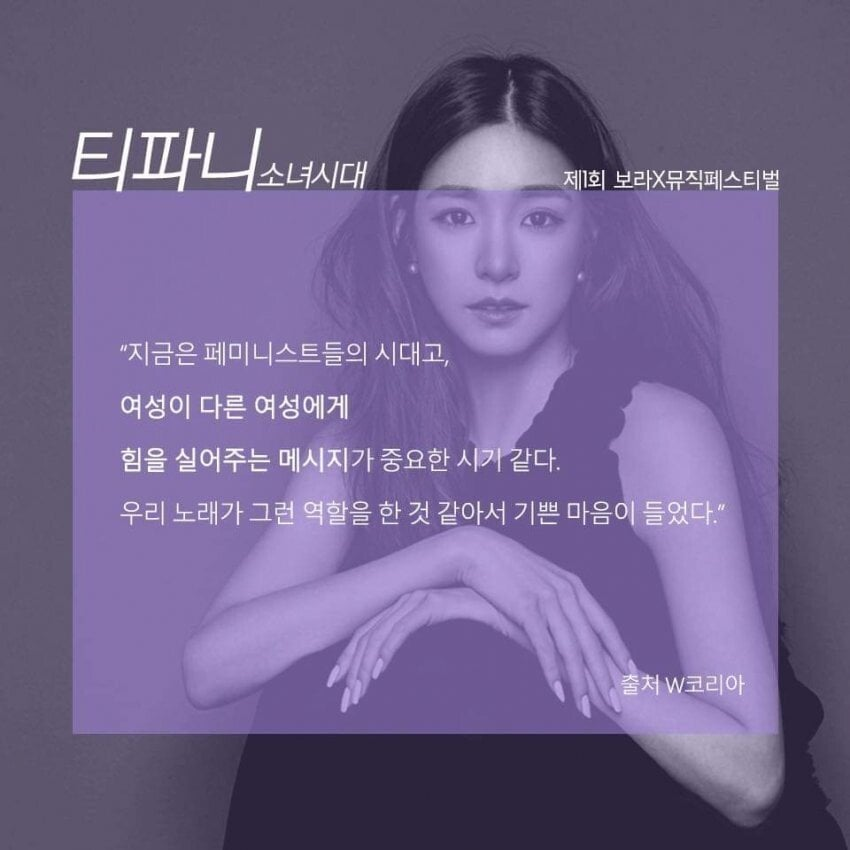
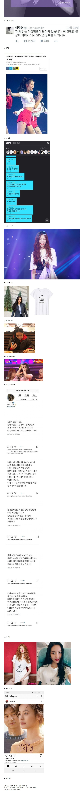
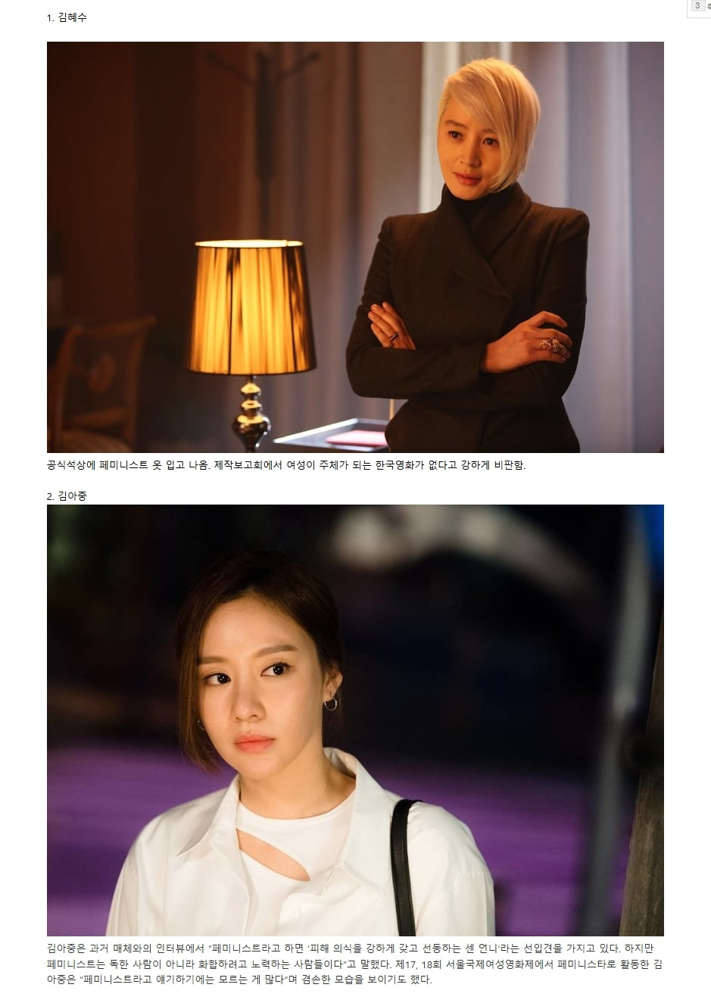
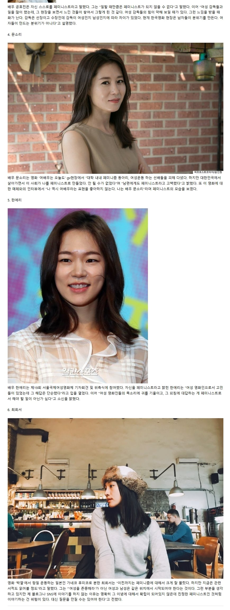

판단은 알아서.




판단은 알아서.
자기 이익을 위해서 남 짓밟는게 당연하다 생각하는 인간은 쓰레기가 아닌가?
그걸 미러링이라고 생각하고 정당하다고 생각하는 능지를 가진 집단이지.
라고 물어보면 공부하라함 ㅋ
페미 하던지 말던지 솔직히 상관 없음 연예인 자체보단 작품만 즐기니까 쟤들 작품이 대단한가? 글쎄
대한민국에서는 여성인권이 압도적으로 높습니다.
좋게 보진 않는데 몇몇은 그럴 수 있다고 봄. 팬이라는 가면 쓰고 보내는 더러운 연락 많이 받다보면 그럴 수 있지..
좀 나이 많거나 좀 힘든애들은 이해가 가는데
소시는 좀 이해 안가긴해
대형기획사에 그시절 0티어 걸그룹
대체 뭐에 억압받아 본걸까?
바쁜스케쥴?
근데 대체로 한물간 사람들이네
욕하라고 올려놓고
판단은 알아서 이지랄하네ㅋㅋㅋㅋㄲ
판단은 알아서 이지랄하는게 역겹긴하네
별수있나 쉽게 선동할라고 만든게 페미니즘이라
겉핥기 식으로 접한 사람들은 사이비종교마냥 물듬
진짜 신천지,안아키랑 다를게 없음
여자 입장에선 페미하는 게 당연한 거 아님?
성별로 정체성 나누고 차등 대우 받기 위한 이익집단이잖아